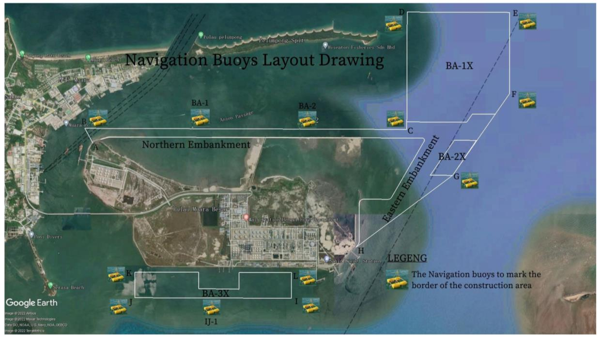
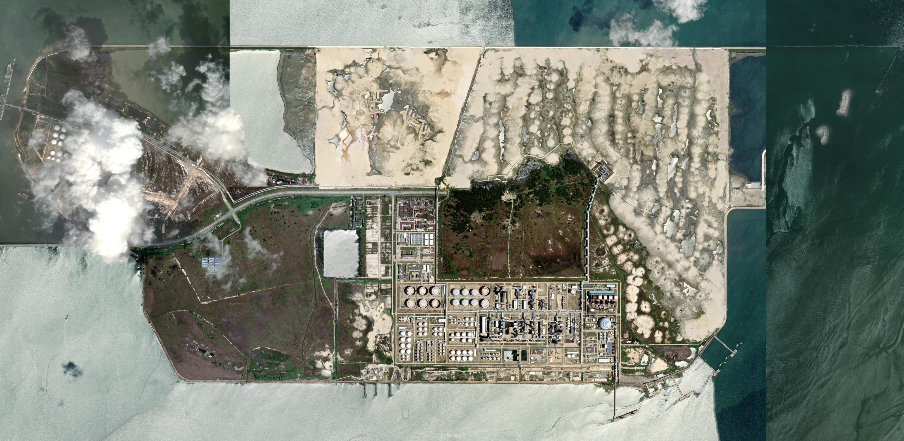
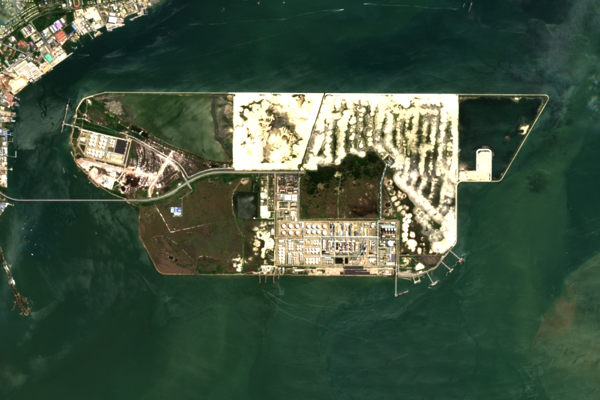
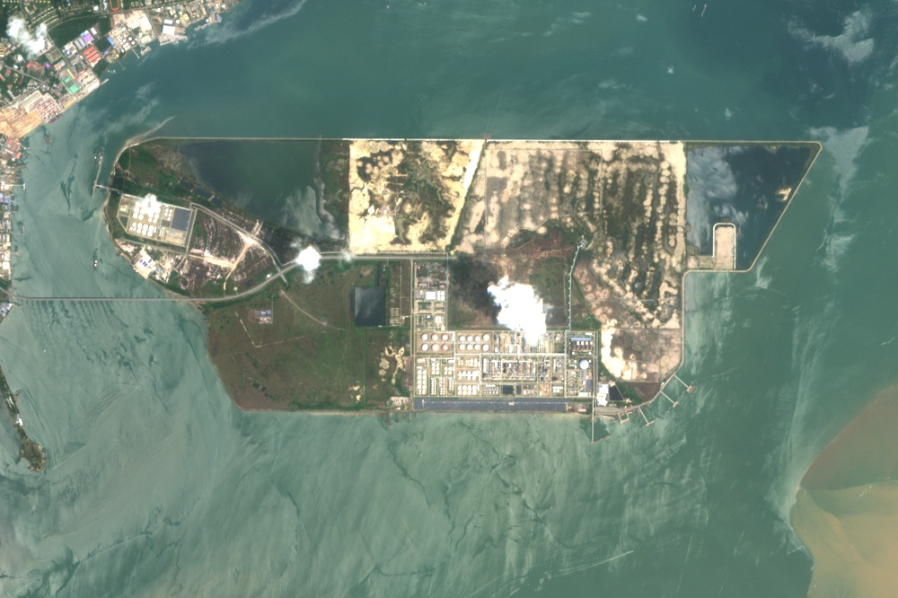
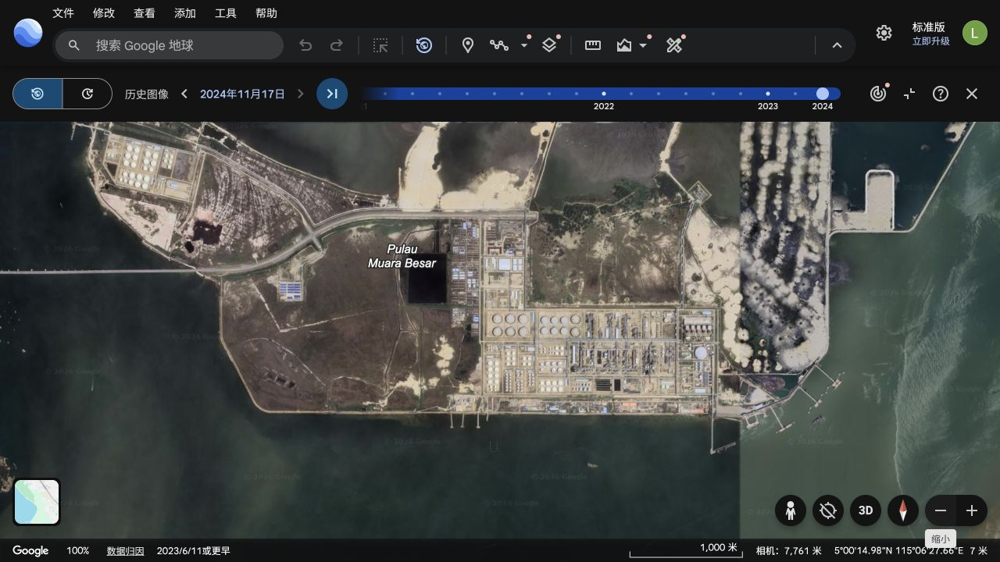

项目参数与公开时间记录
现有炼油规模。
新增炼油设计能力；较一期高50%。
公司公告原文为“力争建成”。
800＋1200＝2000万吨/年；全厂设计规模较一期增加150%。以上为设计/规划数字。[A1] [S11]
| 披露时间 | 文件记录 | 材料所载性质 |
|---|---|---|
| 2017-09 | 二期框架MOU：1400万吨炼油、150万吨乙烯、200万吨PX。[A4] | 意向框架；公开公告3页，未附完整MOU和用地地图。 |
| 2020-09 | 投资公告：炼油1400万吨/年，总投资136.5389亿美元，建设期3年。[A3] | 当时方案及建设期口径。 |
| 2022-08 | 二期问答披露正在开展围堤吹填施工。[L08] | 当时已有施工的公司披露；不是近两年才启动填海，也未披露全部完工。 |
| 2026-01 | 全面启动公告：优化至1200万吨/年，力争2028年底建成。[A1] | 现方案和公司目标。 |
| 2026-03 | 文莱议会记录50亿美元投资、2029年预计运营；另份答复称计划2028年底完成。[S10] [S11] | 政府答复中的计划时间。 |
| 2026 H1 | 设计承包商新签合同清单出现恒逸二期详细设计/总体设计；公司列二期在建工程。[S19] [A2] | 合同披露及截至6月末的会计记录。 |
| 2026-08至10 | 官方海事勘察通告、设备供应商供货范围披露、当地管理层发言。[S06] [S01] [S09] | 下文分别列原件、计划窗口与交付记录覆盖情况。 |
用地定位与历史工程图
跨年影像观察：2021年8月与2022年7月相比，北侧可辨新增长直堤线及与既有陆地相连的结构；2023年5月围合轮廓进一步延伸，内部出现成片浅色地表；2024年7月已可辨北、东侧围合及大片地表，2025、2026年可继续追踪。该观察与早期围堤吹填披露相互印证，但影像不能单独确定填方验收日期、填海总量或二期各标段完成率。查看跨年影像对比。[R3]
2022／2023年官方围填海工程附图
海事附图明确标出既有厂区北侧护岸、东侧护岸及周边海上借土作业区。这是历史海事施工范围；通告未将图中范围标为“二期厂区”。现行二期正式总平面、206公顷地籍红线及约600公顷强夯分标图仍未取得。[L06] [L07]

NTM 34/2023，PDF第6页附录2原图。北侧、东侧护岸及BA-1X／2X／3X海上作业区。白线与浮标标记施工范围，不是二期地籍红线。底图拍摄日期未核实；原嵌图1241×698像素。
2022官方原件PDF · 第5–9页 2023官方原件PDF · 第6页
| 材料 | 原文／附图提供的信息 | 适用范围 |
|---|---|---|
| 2021-08-16 NTM 47/2021 | 海事通告已列恒逸PMB填海及护岸作业窗口8月16日至12月31日。[L10] | 计划作业安排，不是独立核实的实际首日或完工日期。SHENA年报另记2021年1月开始项目准备，不能将准备工作直接写为全部工程开工。 |
| 2022-02-16 NTM 10/2022 | 恒逸PMB填海、护岸及疏浚；承包商CSCPE (B)及Jiangsu Haihong。第5页附图与WGS84坐标；第6–7页借土区；第9页列17个施工边界航标。[L06] | 历史海事施工定位。BA-1／2／3是借土/疏浚区，不是炼化装置用地；没有206公顷地籍或强夯分标信息。 |
| 2022-08-23业绩会 公司记录 | 第8页问答7称文莱二期已取得政府初步审批函，正在有序开展围堤吹填施工。[L08] | 公司当时披露；未附图，也未给出与上述海事范围的一一对应。 |
| 2022-12 文莱大学论文 | 参考文献列DHI Water & Environment（2020）《Hengyi Phase II Environment and Social Impact Assessment》，注明“Unpublished report”。[L09] | 环评书目线索；本轮取得的是引用它的论文。尚未取得该环评全文、附图或批准文件。论文Figure 1是SIP周边环境示意。 |
| 2023-05-11 NTM 34/2023 | 同名填海护岸工程；附图列北侧、东侧护岸及BA-1X／2X／3X海上作业区。[L07] | 航标布置图；不是主体装置总平面。原文起始日期存在May／January冲突，不据其确定实际开工日。 |
| 2024-03-15 NTM 22/2024 | 恒逸PMB填海、护岸作业延长通告，双语正文及Duration栏为1月1日至6月30日。[L11] | 英文标题写12月30日，与正文及7月1日撤销记录不一致；保留冲突，不据此推定全年持续施工或验收。 |
| 2024 H1 公司半年报 | 第27页披露报告期内文莱二期正在开展围堤吹填施工，各项工作推进。[L12] | 公司对2024年上半年状态的披露，未给出具体地块新增面积、工程完成量或验收日期。 |
2026年勘察点与高清底图
文莱海事局53/2026号通告第3页列44个钻孔经纬度，第4页附图；标题明确为恒逸二期地质调查。下图选取ZB1、ZB25、ZB43作定位，部分点位于现有厂区东侧近岸至海上。[S06]

全岛 Esri 拼接图，导出约2.00米/像素。红点为官方钻孔示意位置，蓝点为厂址定位点；均不是土地界址。
Source: Esri, Vantor, Earthstar Geographics, and the GIS User Community. 访问2026-10-22。官方坐标表未注明大地基准；叠图暂按WGS84解释，仅作示意定位。钻孔是作业点，不是二期厂区边界。
| 影像位置 | 元数据采集日期 | 源分辨率 |
|---|---|---|
| ZB1 附近 | 2025-03-14 | 约0.34米 |
| ZB25 附近 | 2025-08-05 | 约0.31米 |
| 已核厂区／北部点 | 2025-03-14 | 约0.34米 |
| 已核西侧点 | 2026-01-17 | 约0.34米 |
日期按位置不同；源分辨率与地图导出的像素大小不同。ZB1/ZB25日期由已保存的Esri影像源覆盖多边形与点位匹配取得。[G4]
2020—2026逐年影像与局部对照
默认对比2025-06-16与2026-10-14的全岛同范围影像；左右均可选择2020—2026各年影像，含2025-06-16。可查看北侧、既有厂区与东侧近岸。二期用地的具体边界尚未核实；ZB1、ZB25仅作为勘察点定位，不能用它们圈定全部二期厂区。可切换至勘察点周边的局部窗口。


全岛及周边视野，包含北侧、既有厂区及东侧近岸。尚未取得二期正式厂区边界，因此不把其中任一区域预设为二期施工区。
全岛视野的影像日期、云影比例与方法
| 采集日 | 全岛及周边窗口云/影比例 |
|---|---|
| 2020-06-17 | 2.15% |
| 2021-08-06 | 1.49% |
| 2022-07-02 | 1.01% |
| 2023-05-23 | 0.12% |
| 2024-07-26 | 0.02% |
| 2025-06-16 | 0.14% |
| 2026-06-06 | 0.00% |
| 2026-09-04 | 4.09% |
| 2026-10-14 | 1.17% |
| 2026-10-21 | 45.07% |
| 2026-10-24 | 100.00% |
沿用同一全岛裁切范围：[115.065, 4.975, 115.155, 5.035]（西、南、东、北），UTM 50N；11景均为1000×666像素，10米像素间距及栅格起点一致。Sentinel-2真彩色原生10米，SCL质量分类20米；类别3/8/9/10合计计算云影比例，排除SCL无效像元。窗口包含海面，比例不是二期厂区云量；2022-07-02全岛窗口无效像元约0.01%。低云影比例不等于无薄霾。显示重采样或放大不增加原始细节，未进行生成式增强。各年历史候选在5—10月中筛选，采集日期不同，不代表年末状态。Contains modified Copernicus Sentinel data (2020–2026), processed via Earth Search。 [R3]
2026年6—10月勘察点周边局部窗口的目视记录（不代表历史填海）
仅针对下述东侧窗口：6月6日、9月4日与10月14日的主要岸线、码头轮廓和既有装置布局相近；本轮没有从该局部窗口确认新增大型主体装置或明显的大面积新填海。近岸一处小矩形地表从6月浅色变为9月、10月持续深色，原因及其与二期施工的关系未核。10月21日岸上区域有大片云遮。此记录不代表二期全部施工范围的变化情况。
勘察点周边局部窗口：影像日期、云影比例与方法
| 采集日 | 本东侧窗口云/影比例 |
|---|---|
| 2020-06-17 | 3.26% |
| 2021-08-06 | 3.24% |
| 2022-07-02 | 0.00% |
| 2023-05-23 | 1.05% |
| 2024-07-26 | 0.00% |
| 2025-06-16 | 0.01% |
| 2026-06-06 | 0.00% |
| 2026-09-04 | 0.72% |
| 2026-10-14 | 0.06% |
| 2026-10-21 | 52.25% |
| 2026-10-24 | 100.00% |
同一东侧范围：[115.121, 4.990, 115.140, 5.0055]（西、南、东、北）；各景重投影至相同EPSG:3857网格，1024×839显示像素。Sentinel-2真彩色原生10米，SCL质量分类20米；类别3/8/9/10合计计算云影比例，排除SCL无效像元。窗口包含海面，比例不是二期厂区云量；2022-07-02全岛窗口无效像元约0.01%。低云影比例不等于无薄霾。显示重采样或放大不增加原始细节，未进行生成式增强。Esri选项保留原拼接日期与署名，来源、分辨率和色调与Sentinel不同；颜色本身不作为新增工程证据。 [R3]
原始界面日期截图
厂址定位为5.0041638°N、115.1076861°E。本次全岛历史视图选中2024-11-17，中心状态栏显示2023-06-11或更早。

土地面积：文件各自写了什么
| 公开数字 | 原文口径 | 出处 |
|---|---|---|
| 一期260公顷 | 生产区域土地使用权。 | 2026H1第221页。[A2] |
| 一期另列69.7978公顷 | 西部罐区、码头等土地使用权。 | 2026H1第221页。[A2] |
| 二期206公顷 | 二期土地使用权；租期2021-04-23至2051-04-22。 | 2026H1第221页、2025年报第265页。[A2] [L02] |
| 约600公顷 | 强夯工程工作区约600万平方米，3标段；分标面积以正式总图为准。 | 业主2026年强夯EOI。[S03] |
| 旧扩建660公顷 | 扩建及额外围填海覆盖的当时规划表述。 | SHENA 2020/21年报PDF第20页。[L05] |
算术比较：206÷260−1＝−20.8%；1200÷800−1＝＋50%。前者比较报表中的两项地权，后者比较炼油设计能力。
所取得的公开文件未提供206公顷地块的lot编号、界址坐标或总平面；也未提供它与600公顷强夯区、660公顷旧填海口径的对应关系。2017年MOU公告、2026强夯/地勘/EIA服务EOI均未附这类图件。[A4] [S03] [S04] [A6]
2024年报第262页同项附注未列206公顷地权，2025年报第265页已列；披露时间与租赁起期不同。[L03] [L02]
设计、采购、海事与当地消息
| 时间／来源 | 公开材料中的具体内容 | 文件覆盖阶段 |
|---|---|---|
| 2026-10-26 恒逸EOI | 二期工人营地建筑与工程设计服务征询（PMBIIS20260013），拟容纳18,200人，场地约600×400米；截止11月4日15:00。[A7] | 设计服务征询；方案设计授标后18日、施工图方案批准后42日。人数和面积为设计范围，不代表已进场人员、营地建成或主体装置开工。 |
| 2026 H1 中石化炼化工程 | 将恒逸二期详细设计和总体设计列入前端工程代表性新合同。[S19] | 新签设计合同；未披露该合同完成率、交付率或单项金额。16项合计1.45亿美元为全组数据。 |
| 2026-10-14 Honeywell | 披露技术许可、工艺包、专有设备、催化剂及服务；涉及CCR Platforming、Unicracking、Butamer、C4 Oleflex、Parex等。[S01] | 供货范围披露；该新闻稿未列制造、FAT、发运或到场日期。 |
| 日期冲突 西南化工 | 官网提及六套PSA、氢气合计超过60万立方米/小时及供货/设计分工。[S02] | 正文2020-09-09，CMS日期2025-11-17；当前仅留存摘录，未确定事件日。 |
| 2026-05材料 恒逸EOI | 强夯约600万平方米、3标段、暂定1年；另有地勘/试夯征询。[S03] [S04] | 工作范围征询；EOI注明不构成招标邀请。 |
| 2026-09报道 项目消息转载 | 报道称9/18约250万平方米一标段清表、降水及强夯开工；另有华晋中标线索。[S07] [S08] | 二手报道；本轮未取得对应企业原公告与总分包关系文件。 |
| 2026-08至09 文莱海事局 | 41/42号列二期码头、水道、单点系泊与海底管线测量；43号9/9被52号撤销；53号另列9/9–9/20地质调查。[S16] [S17] [S05] [S15] [S06] | 计划作业通告；涉及EAGLE、SUNKIN NO#1等调查船，非设备运输记录。 |
| 2026-10-07 恒逸EOI | 二期EIA技术服务征询，已取得2页原件。[A6] | 无总图及界址；未取得与既有环评批准文件的对应关系。 |
| 2026-10-17 Brudirect | 当地媒体记录CEO在媒体活动中表示二期正在推进。[S09] | 管理层公开发言记录；材料未附现场工程量表。 |
财报与融资文件记录
10月29日融资相关更新：公告第1—2页披露恒逸文莱2024年银团项目贷款已全部结清，相关担保责任解除；部分股权解除质押仍在办理。这是既有贷款及担保事项，文件未证明二期新增融资到账。[A9]
2026H1文莱二期在建工程，报告期末为6月30日；单位：亿元人民币。[A2]
本期增加812.65万元；期末较期初净减少0.8627亿元。原表“累计投入占预算比例”和“工程进度”均列3.18%，预算栏仍列2020旧方案136.5389亿美元。“其他减少”原因在所核表格中未说明。
以上为会计项目及原表列示，非2026年10月实物工程测量。会计余额变动不等同于现金付款或现场完成量。
原件索引与尚未取得的资料
本轮尚未取得：206公顷地籍图及正式总平面、地基标段对应图、核心设备制造/FAT/提单/到港/安装的可匹配记录、实际融资提款和新版完整预算对照。上述为资料覆盖情况。
| 编号／身份 | 原始材料 | 原文定位与材料范围 |
|---|---|---|
| A1 发行人 | 恒逸石化：二期全面启动公告 2026-01-06 | PDF p1–3 1200万吨、2028年底目标；贷款意向函与股东贷款承诺函，未证明提款。 |
| A2 发行人 | 恒逸石化：2026半年报 2026-08-11 | PDF p186–188 / 在建工程；p221 / 土地使用权 截止6月30日会计余额；预算仍列旧方案金额。 另列260、69.7978及二期206公顷地权；无边界。 |
| A3 发行人 | 恒逸石化：2020二期投资公告 2020-09-16 | PDF p1–4 1400万吨旧方案、136.5389亿美元；3年建设期不等于无条件日历承诺。 |
| A4 发行人 | 恒逸石化：2017框架谅解备忘录 2017-09-16 | PDF p1–3 意向框架，不等于已融资、开工或固定投产承诺。 公告未附MOU全文或地图。 |
| S19 设计承包商 | 中石化炼化工程：2026半年报 2026-08-16 | PDF p25 / 印刷p23 恒逸详细与总体设计列入H1新签前端工程代表合同；16项合计1.45亿美元不是恒逸金额。 |
| S01 设备供应商 | Honeywell：文莱二期供货范围 2026-10-14 | 新闻稿正文 许可、工艺包、专有设备、催化剂及服务；未给制造、运输、到场节点。 |
| S02 设备供应商 | 西南化工：六套PSA项目开工会 CMS footer 2025-11-17; body metadata 2020-09-09 (conflict unresolved) | 正文及CMS日期字段 供货包/设计启动；正文2020-09-09与CMS2025-11-17冲突，摘录归档，时间低可信。 |
| S03 业主 | 恒逸：强夯地基处理EOI 2026-05; EOI deadline 2026-05-12 | PDF 工作范围 约600万平方米、3标段、1年暂定工期；EOI明确不构成招标邀请。 |
| S04 业主 | 恒逸：地勘与强夯试验EOI 2026-05; EOI deadline 2026-05-12 | PDF 工作范围 估算钻孔/试验点工作包；不是施工完成量。 |
| S16 文莱官方 | 文莱海事局：NTM41/2026 2026-08-13 | PDF 作业期与范围图 8/14–9/14二期码头及水道水文测量计划；不证明实际完成。 |
| S17 文莱官方 | 文莱海事局：NTM42/2026 2026-08-13 | PDF 作业期与范围图 8/14–9/14单点系泊与海底管线测量计划。 |
| S05 文莱官方 | 文莱海事局：NTM43/2026 2026-08-14 | PDF 作业说明 8/14–9/30地质技术调查计划；9/9由52号撤销。 |
| S15 文莱官方 | 文莱海事局：NTM52/2026 2026-09-09 | 官方目录撤销标题 撤销43号；PDF无可提取文字，沿革以官方目录交叉核对。 |
| S06 文莱官方 | 文莱海事局：NTM53/2026 2026-09-09 | PDF p3钻孔坐标，p4附图；p1–2作业说明 9/9–9/20二期相关区域地质调查计划，非设备到港或完工。 可定位部分东侧勘察点，不是206公顷红线；9月21日撤销。 |
| S07 二手报道 | 地基处理一标段9月开工转载 2026-09-21; says field work began 2026-09-18 | 转载正文 称9/18开工约250万平方米；原企业公告、合同归属未核。 |
| S08 二手报道 | 华晋强夯中标消息转载 2026-06-30 | 转载正文 6/30中标线索；与中化二建一标段的总分包/标段关系未知。 |
| S09 当地媒体 | Brudirect：10月17日CEO发言 2026-10-17 | 媒体活动报道 记录CEO称项目推进中；不是记者对现场工程量的独立查验。 |
| S10 文莱官方 | 文莱议会：3月14日会议记录 2026-03-14 | PDF p46、p50 / 印刷p45、p49 p50：50亿美元投资、2029运营预期；政府计划不是资金到账或工期保证。 |
| S11 文莱官方 | 文莱议会：3月28日书面答复 2026-03-28 | PDF / 印刷p57 2028年底完成预期、产能800→2000万吨。 |
| S12 文莱官方 | 文莱海事局：2026通告目录 live index; checked 2026-10-29 | 截至10/29目录列至70号；70号为射击演练 本轮未定位二期重件运抵通告；未检出不等于未发生。 |
| S18 排除项 | 文莱海事局：NTM69/2026 2026-10-19 | 施工项目与业主名称 属于Muara集装箱码头扩建，不能算恒逸二期工程。 |
| A5 业主 | 恒逸：SINAR太阳能项目投运 2026-02-12 | 新闻稿正文 太阳能项目已运营，不等于炼化二期投运。 |
| A6 业主 | 恒逸：10月EIA技术服务EOI原件 2026-10-07 | 2页服务征询，无总图 已取得原件；不构成全项目环评批准状态的证明。 |
| R1 卫星 | Copernicus Sentinel-2 / Earth Search 原记录采集至2026-10-21；跨年及10/24更新见R3 | 50/N/KL；STAC逐景日期与资产 10米真彩色、20米SCL质量分类；研究裁切与目视判读不等于工程测量。 |
| L02 发行人 | 恒逸石化：2025年报 2026-04-15 | PDF/printed page 265 p265列206公顷二期地权及租期；无地籍图。 |
| L03 发行人 | 恒逸石化：2024年报 2025-04-24 | PDF/printed page 262 p262同项附注列一期地权，未列206公顷项。 |
| L05 文莱官方 | 文莱SHENA：2020/21年报 2021 | PDF page 20 / printed page 16 p20（印刷p16）描述660公顷扩建及额外围填海的当时范围。 |
| G4 地图 | Esri World Imagery影像与地点元数据 访问2026-10-22 | 四点L9/10/11元数据、导出范围与像素大小 Esri拼接影像；四原核查点源分辨率0.34米。ZB1元数据2025-03-14/.34米，ZB25为2025-08-05/.31米；输出像素与原生分辨率分开。 |
| L06 文莱官方 | 文莱海事局：NTM 10/2022 围填海、护岸与疏浚范围图 2022-02-16 | PDF p1–2正文；p5附录2总图与WGS84坐标；p6–7借土区；p9航标 历史施工与海上作业范围，标北侧/东侧护岸。通告未称二期，不是206公顷地籍红线或现行装置总图。 |
| L07 文莱官方 | 文莱海事局：NTM 34/2023 围填海护岸及航标布置图 2023-05-11 | PDF p1–2正文；p6附录2导航浮标布置图 北侧/东侧护岸及BA-1X/2X/3X海上作业区。英文正文May17，Duration栏January17，日期有冲突；不据其推定实际开工。不是二期厂区红线。 |
| L08 发行人 | 恒逸石化：20220823投资者关系活动记录 活动2022-08-23；披露2022-08-24 | PDF第8页，问答7（二期情况） 公司当时称二期取得初步审批函，开展围堤吹填；未附总图，未与海事图逐项对应。 |
| L09 学术论文 | 文莱大学：Structural Analysis of Environmental Management of the Serasa Industrial Park 2022-12，卷22(2) | 印刷p69／PDF p72参考文献；印刷p62／PDF p65 Figure 1 书目引用DHI（2020）Hengyi Phase II Environment and Social Impact Assessment，注明Unpublished report。取得的是引用论文，非ESIA原件/批准文件；Figure1为区域环境示意而非二期红线。 |
| R2 卫星 | ZB1／ZB25东侧窗口：同网格影像及质量记录 原记录采集至2026-10-21；跨年及10/24更新见R3 | 范围115.121,4.990,115.140,5.0055；6/6、9/4、10/14、10/21 Sentinel原生10米，SCL20米；同网格展示。10/21本窗口云影52.25%；没有确认新增大型装置或明显大面积新填海。 |
| A7 业主 | 恒逸：二期工人营地建筑与工程设计EOI 2026-10-26（目录发布日期）；截止2026-11-04 | PDF p1工作范围与设计周期；p2截止时间 设计容量18,200人、约600×400米；EOI不是授标或施工完成证明。 |
| A8 发行人 | 恒逸石化：2026第三季度报告 披露2026-10-26；报告期末2026-09-30 | PDF p6财务变动说明；p13合并资产负债表 合并在建工程83.8194亿元；未单列文莱二期余额，不能替换H1二期分项或计算实物进度。 |
| A9 发行人 | 恒逸石化：解除对控股子公司担保责任公告 披露2026-10-29；落款2026-10-28 | PDF p1—2，担保及解除情况 恒逸文莱2024银团项目贷款结清、担保责任解除；并非二期新融资到账证明。 |
| L10 文莱官方 | 文莱海事局：NTM47/2021 填海与护岸作业通告 2021-08-16 | PDF p1—2；计划窗口2021-08-16至12-31 补充2022年前已有工程安排；通告窗口不等于实际开工或完工证明。 |
| L11 文莱官方 | 文莱海事局：NTM22/2024 填海护岸作业延长通告 2024-03-15 | PDF p1—2；正文窗口1/1—6/30 标题12/30与正文6/30及7/1撤销不一致；仅证明2024仍有作业通告，不认定验收完成。 |
| L12 发行人 | 恒逸石化：2024半年报围堤吹填施工记录 2024-08-24；覆盖2024H1 | PDF p27，核心竞争力 报告期内文莱二期正在开展围堤吹填施工；未披露面积或验收日期。 |
| R3 卫星 | 2020—2026跨年Sentinel-2影像与逐景质量记录 历史新增2020—2025；最新采集2026-10-24；检索2026-10-29 | 11个采集日期；全岛与东侧窗口；逐景STAC链接 逐年对照含2025-06-16；10/24两窗口云影100%，不能用于最新施工判断。 |